Open-Quiz User Manual
1 Overview
Open-Quiz is a web platform for producing online quizzes. It supports regulations of What Where When, Jeopardy! and Trivia Quizzes with free form of answers. Audio/video stream may be embeded into a quiz. Media content is allowed (images, audio and video). There are no limitations on the number of participants!
Please login to the production area to start producing quizzes.
2 Setup Quiz
Select “Quizzes” (1) on the left menu to open Quizzes Page
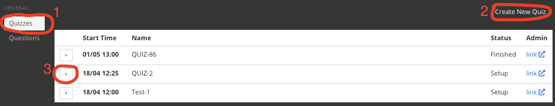
Fig 2.1 Quizzes Page
Here you can “Create New Quiz” (2) or open an existing quiz by clicking the “plus” sign in the table (3).
Quiz editing form will be opened.
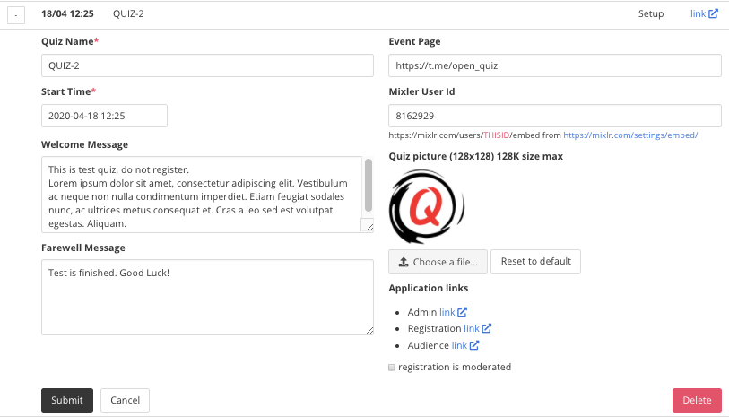
Fig 2.2 Quiz Edit Form
Here you set up:
- Name of the quiz.
- Start Time - in local time of your device.
- Welcome Message - the message is displayed to users before the quiz starts.
- Farewell Message - the message is displayed to users after the quiz finishes.
- Event Page - link to the external page with information about the quiz. It is displayed on the registration page.
- Mixlr User Id - id of your Mixlr account. Keep it blank if you are not going to use Mixlr.
- Quiz picture - an image that users see during the quiz. Usually it is your logo.
- Registration is moderated - this option prevents a team from participating in a quiz until you admit its registration.
Don’t forget to click the “Submit” button to save changes.
The Quiz Edit From also contains:
- Admin link - link to the admin app for operating the quiz.
- Registration link - link to the registration page.
- Audience link - link to read-only view of the quiz.
3 Managing Question’s Packages
Select “Questions” (1) on the left menu to open Questions Page
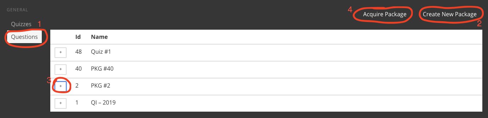
Fig 3.1 Questions Page
Here you can “Create New Package” (2) or open an existing package by clicking the “plus” sign in the table (3). Also you can “Aquire Package” (4) from another account.
3.1 Editing Packages
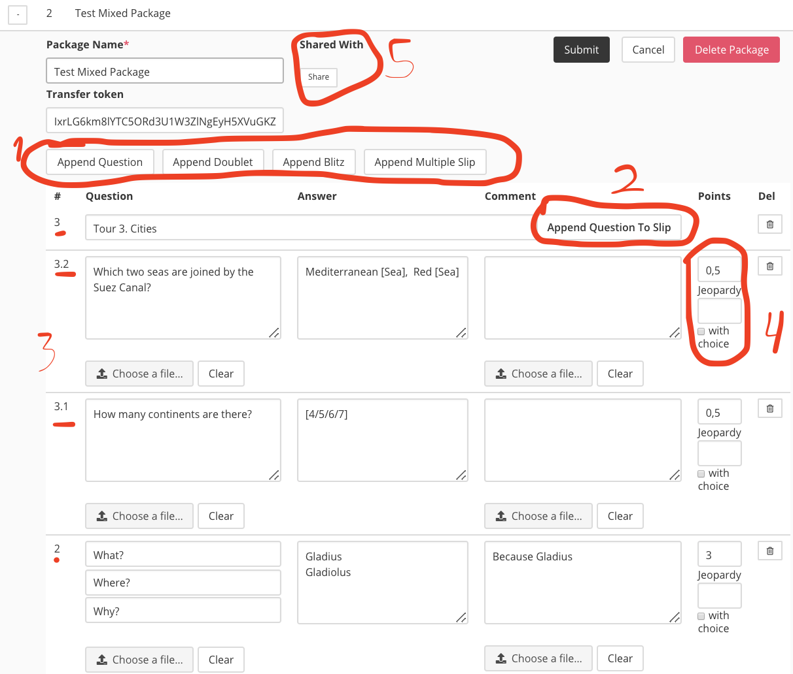
Fig 3.2 Package Edit Form
Fields in the form:
- Package Name
- Transfer Token - used in acquiring scenarios.
A package consists of the slips. Supported slip kinds:
- Single - one question, one answer.
- Doublet - two questions, followed by a single answer.
- Blitz - three questions, followed by a single answer.
- Multiple - slip with a set of single questions, answers are collected at the same time.
You may add a slip by clicking the corresponding button from the toolbar (1). In case of multiple slip, which usually represents a whole quiz’ tour, you should specify the tour’s title and add particular questions with help of “Append Question To Slip” button (2). Be aware, slips and questions are sorted in reverse order (last are higher in the table (3))
Each question has such fields:
- Question or List of Questions - text of the question, displayed to players during discussion.
- Question picture - graphical information, displayed to players during discussion.
- Answer - correct answer, used for automatic settling of the results, first answer is displayed to players after a question is settled.
- Comment - additional information regarding a question, displayed after the question is settled.
- Comment picture - graphical information, related to comment.
- Points - default number of points a team gets is case of correct answer.
- Jeopardy points - points in case of answer with jeopardy (a team gets the points in case of correct answer and loses the points in case of wrong answer).
- With choice flag - if checked, a team has a choice to play jeopardy or not.
Points, Jeopardy points and with choice flag specify three play modes:
| Points | Jeopardy Points | With Choice | Play Mode |
| N | empty | any | Regular. A team gets N points in case of the correct answer. |
| any | M | no | Jeopardy. A team gets M points in case of correct answer and loses M points in case of wrong answer. Team’s points are not changed if the answer is not provided. |
| N | M | yes | Bet. For each question a team has a choice between regular and jeopardy mode. |
Please note, that the points may be fractional as well.
Rules of automatic answers checking algorithm:
- If a question has several correct answers. Each of those should be placed in a separate row.
- If an answer has a non necessary part it could be placed within square brackets. Example: ‘Red [Sea]’.
- If an answer has a choice part it could be placed in square brackets and separated with slash. Example ‘[mr/mrs] Smith’.
- Al is case insensitive.
- Allowed characters - letters, numbers, dot ‘.’, plus ‘+’, minus ‘-’. All other characters are considered as separators of words.
- The algorithm is insensitive to order of words. (“Pushkin,Lermontov” and “Lermontov,Pushkin” are the same answers)
- The algorithm is tolerated to one typo in a word if the word’s size is more than 4 symbols.
Be aware that dot ‘.’ is treated as part of the answer. Trim unnecessary dots from the end of the answer’s text. (eg “Pushkin.” - wrong, “Pushkin” - correct)
3.2 Sharing Packages
From Package Edit From you may share the package with other open-quiz users (Fig 3.2 (mark 5))
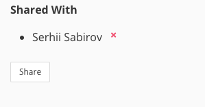
Fig 3.3 Shared With information
Press the “Share” button to share a package with a user.
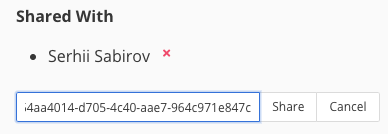
Fig 3.4 Sharing form
You need to enter the user’s id (A user may find the id on the settings page).
Users with whom you share a package, can see the package in their package’s lists but can’t edit it.
3.3 Acquiring Packages
Fig 3.5 Acquiring Form
To acquire a package from another user you should get the package's Id and Transfer Token from its owner. After transfering, you will be able to see the package in your package’s list. Transfer token is changed.
4 Settings
On the Settings Form you may save your mixlr’s id and quiz picture. The attributes will be assigned for new quizzes you create.
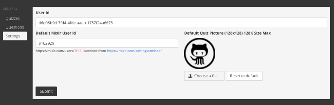
Fig 4.1 Settings Form
Also you may find your User Id. It is necessary information in the scenario of sharing a question package.
5 Administration App
You may open the quiz administration application by “admin link” in your quizzes page.
Using “admin link” several persons may operate with the same quiz simultaneously.
Fig 5.1 Admin Menu
Administration application consist of
- Teams Page - list of registered teams
- Control Panel - managing questions flow
- Answers - managing answers
- Results - results table
5.1 Managing Teams
There are two way how a team could be registered on a quiz
- Registration by “registration link” - you publish “registration link” from Quiz Edit Form. Captains of the teams perform registration.
- Manual registration - you “Create New Team” (1) on Teams Page of administration application.
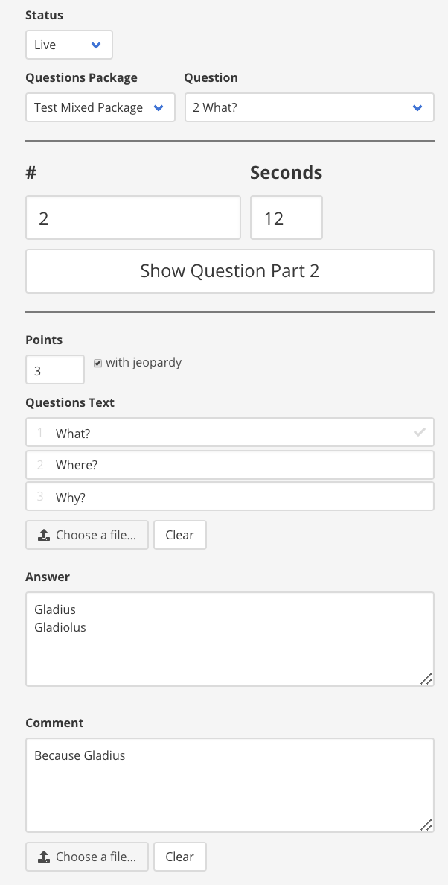
Fig 5.2 Teams Page
In case of moderate registration. You should Admit or Reject (2) the registration manually.
In any time you could change the name of a team and its status using Tram Edit Form.
Entry token is used for creation of Entry URL - unique link where team’s captain may enter answers. An entry url can be used only from one device at the same time.
5.2 Control Panel
From the Control Panel you manage live quiz flow.
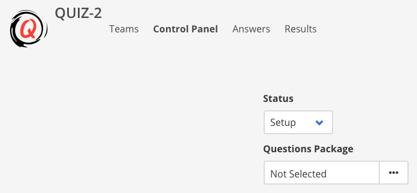
Fig 5.3. Control Panel before live
Two steps you should perform to go live:
- Select Questions Package
- Change Status to Live
After that you will see a Control Panel with information on the Current Question.
Also you may not select a package and enter text of the questions manually.
General Control Flow:
- Select a Questions Package
- Change Status to Live
- Announce a question
- Start Countdown
- Wait until time runs out
- Show Answer and announce it
- Go to Next Slip
- Repeat from point 3 until last question
- Finish Quiz

Fig 5.4 Quiz Control Panel Live
You may perform “last minute” change in the question:
- Set question number (1) - you may change numeration or add a prefix (e.g “play-off 1”)
- Seconds of countdown
- Points for the question
- Jeopardy flag
- Question’s text and picture
- Answert’s text
- Commment’s text and picture
You control quiz flow by sending such commands:
- Start Countdown - after announcing a question
- Reset Countdown - if you start countdown mistakenly
- Show Answer - to show answer on team’s devices and check correct answer automatically
- Next Slip - go to the next quesion’s slip
In case of doublets or blitzes your have extra commands before starting countdown
- Show Question Part 1
- Show Question Part 2 - for blitzes only
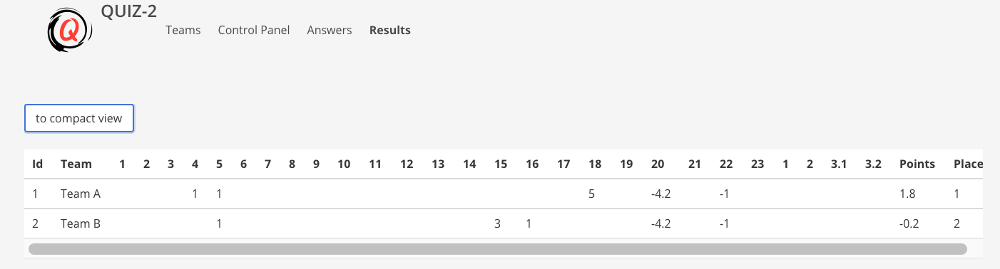
Fig 5.5 Control Panel during a blitz
In case of a multi answers slip you command to show each question successively.
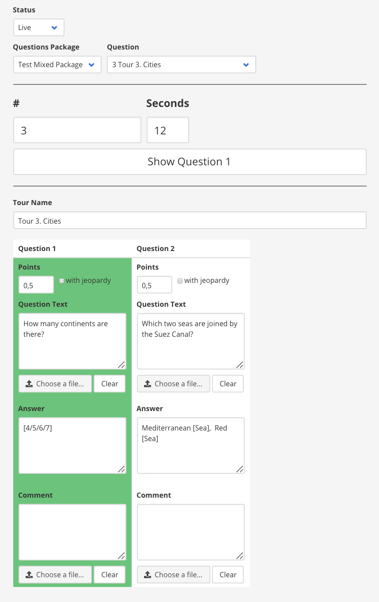
Fig 5.6 Control panel with muli question slip
After last slip in the package, you may choose to
- Finish the quiz
- Select another package (e.g.play-off) and continue
You can change the package or selected question from the package anytime when the quiz is live.
5.3 Answers
Answers page allows to set teams results for each question.
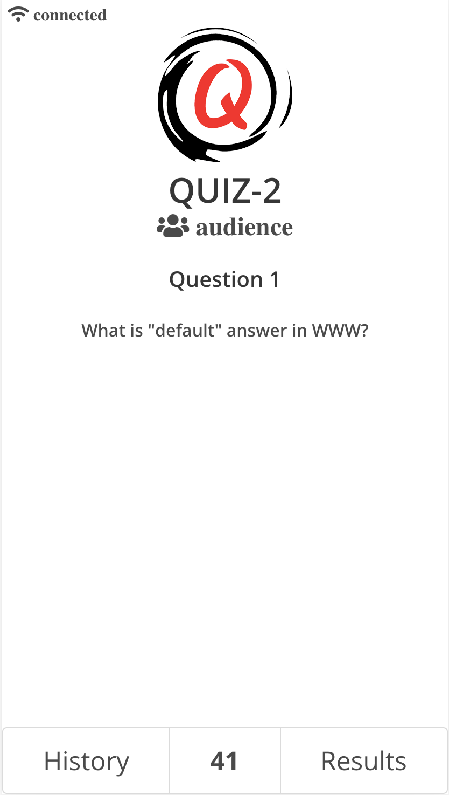
Fig 5.7 Answers Page
You navigate between questions with the help of the left menu.
You may
- Give a team default number of points by clicking “plus” button
- Clear point by clicking “zero” button
- Take points from a team by clicking “minus” button (only for jeopardy questions)
- You may Give any value of point by entering it manually
If you change points for a team, it set the points for rest teams with the same answer.
Time column displays seconds from the start of the countdown when the answer was received.
Usually you wait until autochecking of the answers is completed (button Show Answer is clicked on the Control Panel) and then process the rest of the answers.
5.4 Results
Here you can see current results

Fig 5.8 Results Page
6 Team App
Each team has a unique link to a quiz. The link can be found on the registration page or directly obtained from the quiz’ administration.
Only one device can open the link at the same time. So this is a good idea to give the link to the team’s captain.
 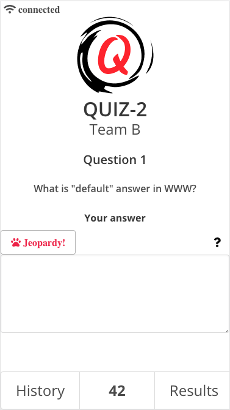
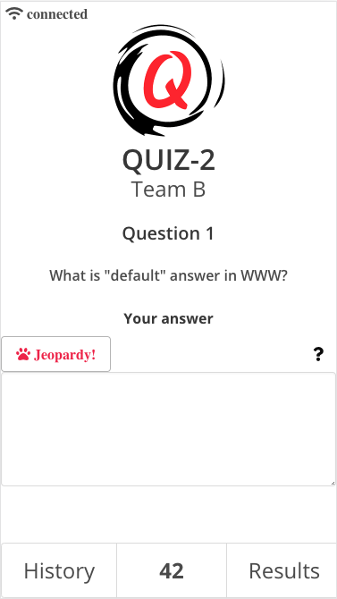
Fig 6.1 Team’s application (without choice and with choice)
The application consists of
- Question Page - where questions are displayed and answers are entered. (There is no “Send” button in the app) An answer is sent automatically after the countdown.
- History Page - history of the team’s answers and correct answers
- Results Page - current results
On the top of the application Mixlr player is embedded in case appropriate id is provided in the Quiz Edit Form.
7 Audience App
Audience application provides read-only access to the quiz’ content. It is a good idea to share the link with non-captains competitors. The link could be found in the Quiz Edit Form.

Fig 7.1 Application for the audience
8 Recent releases information
Due to the non-commercial basis of the project, I have no time to update the entire documentation, so the new functionality will be described in this section.8.1 Choice Answers
Along with open answers, you can now set a fixed list of answers from which you want a quiz' participant to choose the right one.8.2 Mediapack
Added embedded media player. You may add link to a stream from Quizzes' Control Panel.Added support of audio and video content in the questions. Just upload corresponding file. Size of the media content is limited with 2 MB.
8.3 Languages pack
Localized UI for participants (captains, audience, registration) (English, Russian, Ukrainian)UI's Language is determined from client's browser's settings